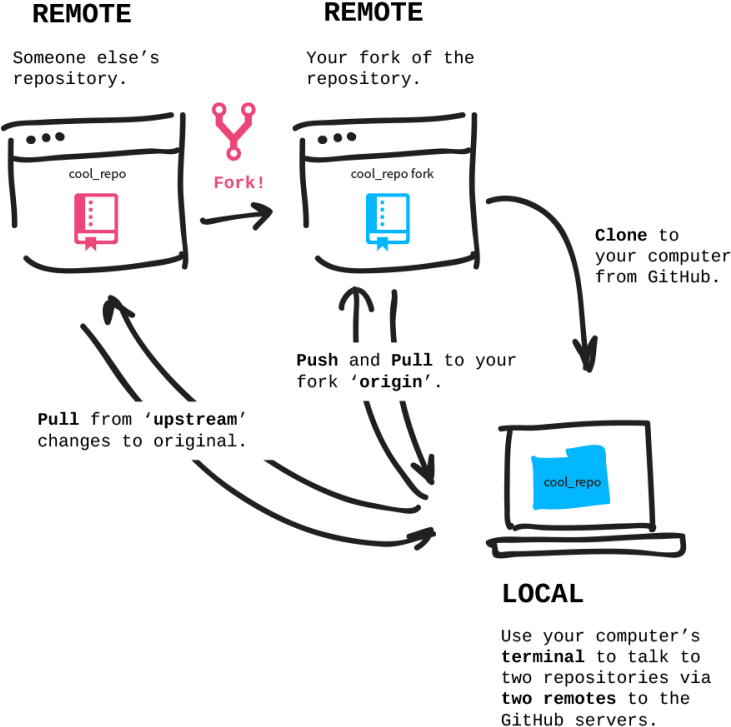

Git
github
settings/Developer settings/Personal access tokens
Password: your_token
git init // Create an empty Git repository or reinitialize an existing one
git status // проверяем
git add fileName , * , . , --all, -p
git reset fileName // untracked file
git commit -m'комментарий'
git commit --amend // перетирает последний коммит
git mv ??? Move or rename a file, a directory, or a symlink
git rm ? Remove files from the working tree and from the index
добавить репозиторий на github
git remote add origin url.git //добавляет сервер
git push origin master
// загружаем в удаленный репозиторий в мастер-ветку
git remote -v //покажет список серверов
git remote set-url origin https://github.com/USERNAME/REPOSITORY.git //изменяет url сервера
git clone url // скачать репозиторий с гитхаба
git branch имяветки // создаем ветку
git checkout -b newbranch // создание новой ветки с переключением на неё
git checkout master // переключение на ветку мастер
git merge branch2 // слияние в настоящую ветку ветки branch2
git branch -d имяветки //удаляем ветку
git log -2 // показывает два последних коммита
git log -p // просмотреть разницу
git log --oneline --graph --decorate
git checkout 7efcf00 // возвращение к определенному коммиту
cat .git/refs/heads/master
// посмотреть хеш мастер-ветки
cat .git/HEAD //в какой ветке
git show 7efcf00 , @ , @~2^2
.gitignore
node_modules
*.log
git config -—global user.name "John Doe"
git config -—global user.email johndoe@example.com
git config -—global -l
git config core.autocrlf false // ?
git config --list
git rebase branch2 // копирование комитов ветки к другой ветке
git rebase --skip //
git rebase --abort //
git rebase --continue //
git rebase -i HEAD~7 // схлопнуть(squash) 7 коммитов в один
git pull --rebase upstream master
// скачиваем из удаленного репозитория отсутствующие у нас изменения
git fetch //download objects and refs from another repository
git tag v1.0.0
git tag -a v1.0.0 -m "release v1.0.0"
//удаляет конкретный коммит создавая новый
git revert HEAD~1 //удаление изменений предыдущего коммита
git revert @
git revert HEAD --no-edit // ?удаление последнего коммита
git revert --abort // отменяем если возник конфликт
git reset @~2 [ --soft | --mixed | --hard ]
//отменяет два последних коммита
git reflog //история ресетов
git reset хешРесета // отменяет ресет
git stash // сохраняем working dir перед pull
git stash pop //возвращаем отложеный workDir
git stash list
git diff // показывает изменения в workDir
git diff @~1 //в глубь
git diff @^1 //в ширь
//git clean -n // покажет что будет удалено из workDir
//git clean -f // удалит все из workDir

git remote -v // просмотр какие репозитории есть локально
git remote add upstream url.git // добавление репозитория
git pull --rebase upstream master //обновляем локальный
git rebase -i HEAD~7 //схлопываем
git push origin task-3 // отправляем
switch Switch branches
git restore --staged index.html // убираем файл из staged area
git cat-file -p папка имяфайла //посмотреть содержимое файла
git hist
git rev-parse 08ddf8e~2
bisect Use binary search to find the commit that introduced a bug
grep Print lines matching a pattern